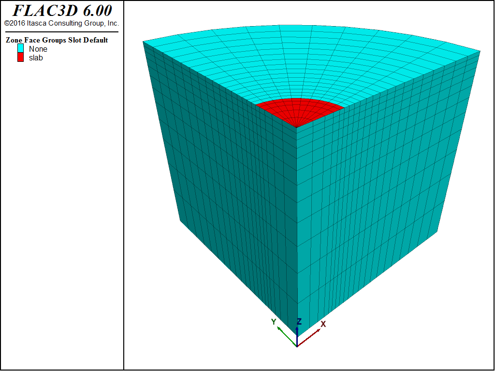
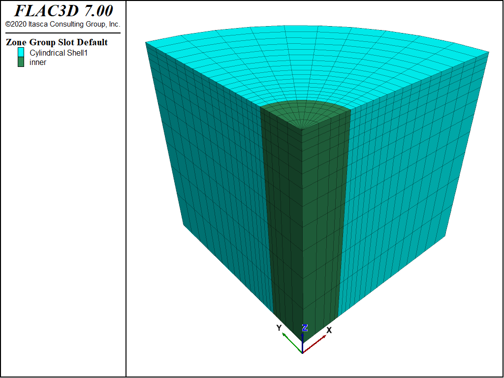
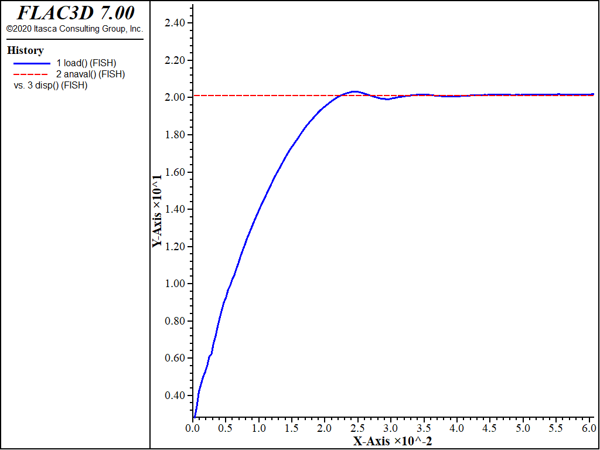
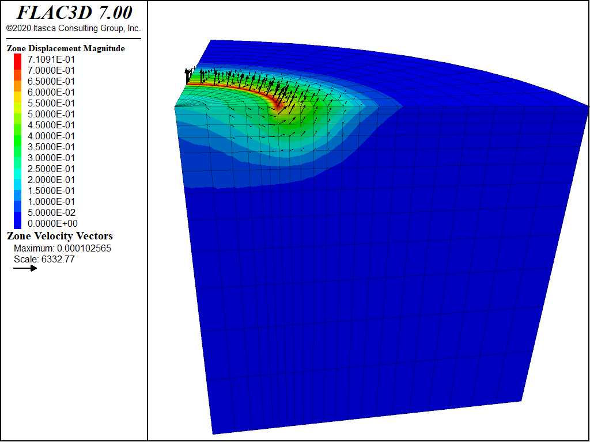

关联 Mohr-Coulomb 材料上的光滑圆形基础
问题描述
注意
要在 FLAC3D 中查看此工程，请使用菜单命令 。选择“VerificationProblems/CircularFooting”，再选择“CircularFooting.f3prj”即可加载。所使用的主数据文件（main data file）在本示例末尾给出。其余数据文件可在该工程中找到。
本节以数值方法确定 Mohr-Coulomb 介质上光滑圆形基础的承载力。该基础用半径为 \(a\) 的圆表示，位于具有以下性质的关联材料上：
| 剪切模量（\(G\)） | 0.1 GPa |
| 体积模量（\(K\)） | 0.2 GPa |
| 黏聚力（\(c\)） | 0.1 MPa |
| 摩擦角（\(\phi\)） | 20° |
| 剪胀角（\(\psi\)） | 20° |
半解析解
Cox 等（1961）对该轴对称基础问题的滑移线方程进行了数值求解。摩擦角为 20° 时，破坏时基础底面平均压力的半解析值为
其中 \(q\) 为承载力，\(c\) 为材料的黏聚力。Chen（1975）所引用的相应滑移线网格绘于图 1（Figure 1）。

图 1：光滑圆形基础的 Cox 滑移线网格，\(\phi\) = 20°。
FLAC3D Model
作为展示 FLAC3D 三维建模能力的一种方式，本问题考虑了 1/4 对称性。数值模拟所用的域为图 2（Figure 2） 所示的 1/4 圆柱。选取一套坐标轴，其 \(x\) 轴和 \(y\) 轴位于圆柱上底面平面内，\(z\) 轴沿圆柱轴线向上。该板由半径为 \(a\) 的圆盘扇区表示。域的半径为 15 m，高度为 10 m。


图 2：FLAC3D 模拟的域——1/4 对称。
施加于该域的边界条件绘于图 3（Figure 3）。位于 \(x\) = 0 和 \(y\) = 0 的对称边界上的位移分别在 \(x\) 和 \(y\) 方向受到约束。圆形边界以及圆柱底面的位移在所有方向均受到约束。对代表基础范围的网格点沿 \(z\) 负方向施加向下的速度。

图 3：FLAC3D 分析的边界条件——1/4 对称。
该域离散为 2000 个网格单元构成的规则径向网格，如图 4（Figure 4） 所示。代表基础的半径 \(a\) 在径向延伸四个网格单元环，速度即施加于这些环上，再加上至与施加速度的最后一个网格点相邻的网格点距离之半。于是，与施加速度的网格点相对应的基础半径为 \(a\) = 3.165 m。在基础节点上施加大小为 2.0 × 10-5 m/step 的速度，共 9600 个时步。
文件“footing-load.dat”中包含的 FISH 函数 load 计算归一化基础平均压力的数值，即 \(p/c\)。


图 4：FLAC3D 网格。
结果与讨论
对应于数值模拟的荷载—位移曲线见图 5（Figure 5），其中 load 为归一化基础平均压力 \(p/c\)，解析值（anaval） 为归一化承载力的解析值 \(q/c\)，位移（disp） 为归一化竖向位移 \(u_z/a\)。承载力的数值 \(q\) 为 2028 kPa，与解析值 2010 kPa 相比相对误差为 0.4%。


图 5：荷载—位移曲线。
计算结束时径向平面上的速度云图和速度矢量见图 6（Figure 6），与图 1（Figure 1） 中的破坏机制吻合良好。


图 6：破坏荷载下的速度场。
参考文献
Chen, W.-F. “Bearing Capacity of Square, Rectangular and Circular Footings,” in Limit Analysis and Soil Plasticity, Developments in Geotechnical Engineering 7, Ch. 7, pp. 295-340, New York: Elsevier Scientific Publishing Co. (1975).
Cox, A. D., G. Eason and H. G. Hopkins. “Axially Symmetric Plastic Deformation in Soils,” Phys. Trans. Royal Soc. London, Series A, 254(1036), 1-45 (1961).
数据文件
CircularFooting.dat
;---------------------------------------------------------------------
; 摩尔–库仑材料上的光滑圆形平板（Cox 问题）
; -关联塑性流动-
;---------------------------------------------------------------------
model new
model large-strain off
; 创建网格单元
zone create cylindrical-shell point 0 (0,0,0) point 1 (0,15,0) ...
point 2 (0,0,15) point 3 (15,0,0) ...
point 4 (0,15,15) point 5 (15,0,15) ...
point 8 (0,3,0) point 9 (3,0,0) ...
point 10 (0,3,15) point 11 (3,0,15) ...
size 16 12 10 5 ratio 1.1 0.8 1 0.75 ...
fill group 'inner'
; 分配本构模型和属性
zone cmodel assign mohr-coulomb
zone property bul 2.e8 shea 1.e8 cohesion 1.e5
zone property friction 20. dilation 20. tension 1.e10
; 命名表面
zone face skin
zone face group 'slab' range group 'inner' group 'Top'
; 边界条件
zone face apply velocity-normal -2e-5 range group 'slab'
zone face apply velocity-normal 0.0 range group 'South'
zone face apply velocity-normal 0.0 range group 'West'
zone face apply velocity (0,0,0) range group 'East' or 'North' or 'Bottom'
; program call 调用计算基础荷载的 FISH 函数
program call 'footing-load'
; 记录若干历程
history interval 50
fish history load
fish history anaval
fish history disp
model history mechanical ratio-local
; 循环至速度场稳定
model cycle 9600
; 保存模型
model save 'cox'
fish list [load]
fish list [anaval]
fish list [err]
⇐ Rough Strip Footing on a Cohesive Frictionless Material | Smooth Square Footing on a Cohesive Frictionless Material ⇒
| 这些内容对您有帮助吗？… | FLAC3D © 2019, Itasca | 原文更新于 2020 年 10 月 8 日 |